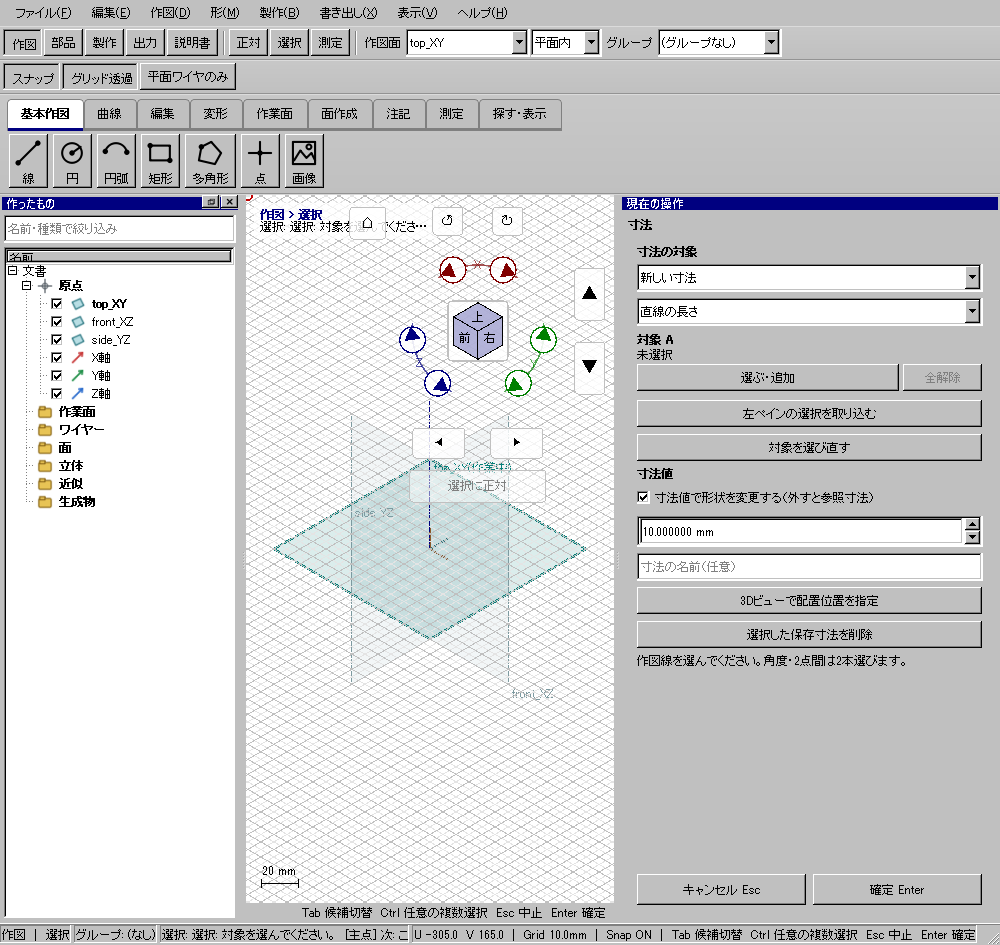

長さ20mmを寸法値で30mmへ変える
長さ20mmを寸法値で30mmへ変える
使う機能：寸法
形状を変える寸法と参照表示を配置前に選びます。対象がそろうと配置待ちになり、3Dで置くクリックが確定です。
長さ30mmの線と保存される寸法ができる。
1 準備 — 元の図形から作る
XY面内に直線(0,0)→(20,0)を座標で作成する。
まだ用意できていなければ、次の手順を先に行ってください。既にモデルがある場合も、例の座標・大きさ・面の向きを自分のモデルへ読み替えます。
- 指定座標の直線・円・円弧を準備する — 図形の作成から順に練習できます。
- 線・面・部品を取り違えずに選ぶ — 図形の作成から順に練習できます。
練習前にKCD2を別名保存します。数値の長さはmm、角度は度です。平面内のu/vと世界XYZを区別します。
2 使う道具を開く — 押す場所
- 作図 → 注記 → 寸法
別の入口：Ctrl+K → 寸法を検索 → 候補の用途を確認して開きます。別モードなら「全モードから探す」をオンにします。


この実画面は既存操作試験の一場面で、下の数値例の完成画像とは限りません。
3 操作手順 — 一つずつ進める
20mm線を用意する
座標で作成から直線0,0→20,0を作り、Vで選択へ戻します。
画面で確認：端点と全体長が既知の直線です。
寸法の種類を選ぶ
「作図 → 注記 → 寸法」を開き、「直線の長さ」を選びます。
画面で確認：対象Aへ線を指定する種類になります。
対象を登録する
対象Aの選択ボタンを押し、20mm線をクリックします。2点寸法なら線の端点をA/Bへ別々に指定します。
画面で確認：対象がそろうと寸法の配置待ちになります。
形を変えるか選ぶ
形状も30mmへ変えるなら「寸法値で形状を変更する」をオンにし、30を入力します。表示だけならオフにします。
画面で確認：配置前に駆動か参照かと値を決めます。
表示位置を決める
3Dビューで線の外側へカーソルを動かして配置位置をクリックします。
画面で確認：このクリックで寸法が確定します。後からもう一度Enterする段階はありません。
結果を確認する
駆動なら線が30mm、参照なら元の長さのままです。寸法が図面に残ることを確認してKCD2へ保存します。
画面で確認：画面の測定結果と、保存される寸法を区別します。
4 設定する欄と数値
ボタン名・欄名と、今回使う値を対応させてください。項目が出ていない場合は作り方・モードが合っているか確認し、ペイン内をスクロールします。
| 見る欄・役割 | この例の設定と意味 |
|---|---|
| 種類 | 直線の長さ |
| 対象A | 20mm直線 |
| 駆動 | オン |
| 値 | 30mm |
| 配置 | 線の外側 |
選択の確認：役割欄の名前と3Dの強調を照合します。重なって拾いにくい時はTabで候補を替えます。全体を使う例では左一覧の要素名を選び、3Dの1辺選択と区別します。

5 確定して結果を確認
値と駆動／参照を決めた後、3Dビューで表示位置をクリックすると確定します。配置後に別の確定ボタンを押す手順ではありません。
長さ30mmの線と保存される寸法ができる。
形を作る操作では、元と結果の名前を分けて一覧で確認し、必要に応じて元を一時非表示にします。表示だけの機能では形状や要素数を変えることが目的ではありません。
6 取消・やり直し・保存
配置前なら入力を取り消します。保存した寸法や駆動で変わった形状はCtrl+Zで戻します。
モデルの編集正本はKCD2、説明書の編集正本はKCIです。外部へ出力するだけの機能では、出力ファイルと編集元を両方残してください。
進めない場合 — 症状から戻る場所を探す
| 起きていること | 確認して直す場所 |
|---|---|
| 表示だけ変えたい | 駆動をオフ |
| 2点を選べない | 線の端点をA/Bへ指定。作図点と取り違えない |
| 水平／垂直の基準＝作業面U/V。角度は2直線の3D方向同士 | 水平／垂直の基準＝作業面U/V。角度は2直線の3D方向同士 |
この機能の入力条件：長さ・半径・直径・角度の寸法を配置し、形状を変更する寸法と参照寸法を切り替えます。
計算中は処理表示を見ます。失敗が出たら、対象・入力条件を変えずに何度も押すのでなく、案内にある対象と条件を確認します。
別の方式・条件で使う
直線の長さ
まず主手順で入力の役割を確認し、この例の値と操作へ置き換えます。
この例の準備：20mmの直線
対象Aへ直線を入れ、配置前に駆動チェックと値30を入れます。3Dの配置クリックで確定します。線が20のままなら参照設定になっていないか確認します。
- 直線の長さ
- 対象線
- 駆動を有効
- 30mm
- 表示位置をクリックして確定
結果の見分け方：線が30mmになり寸法を保存

水平（作業面U）
まず主手順で入力の役割を確認し、この例の値と操作へ置き換えます。
この例の準備：斜線
水平は世界Xでなく現在作業面Uの差です。斜線を指定し駆動オフで置くと参照寸法になります。線の実長と水平成分を区別します。
- 水平
- 線を選ぶ
- 参照寸法
- 表示位置をクリックして確定
結果の見分け方：U方向の長さを表示

垂直（作業面V）
まず主手順で入力の役割を確認し、この例の値と操作へ置き換えます。
この例の準備：斜線
垂直は現在作業面Vの差です。作業面を替えると同じ世界座標の線でも測る方向が変わります。駆動オフを配置前に確認します。
- 垂直
- 線を選ぶ
- 参照寸法
- 表示位置をクリックして確定
結果の見分け方：V方向の長さを表示

半径R
まず主手順で入力の役割を確認し、この例の値と操作へ置き換えます。
この例の準備：半径5mmの円
円を指定し半径の種類を選びます。R5を表示する参照例では駆動を外します。半径5と直径10を混同しません。
- 半径
- 円
- 参照寸法
- 表示位置をクリックして確定
結果の見分け方：R5を保存表示

直径
まず主手順で入力の役割を確認し、この例の値と操作へ置き換えます。
この例の準備：半径5mmの円
直径の種類でR5円を指定します。参照表示なら値10が出ます。駆動で形を変える場合の値は直径です。
- 直径
- 円
- 参照寸法
- 表示位置をクリックして確定
結果の見分け方：直径10mmを保存表示

2直線の角度
まず主手順で入力の役割を確認し、この例の値と操作へ置き換えます。
この例の準備：直交する2直線
線1・線2を別の対象欄へ指定します。角度は2直線の3D方向同士の角度で、作業面U/Vへ投影した値ではありません。
- 角度
- 線1・線2を別欄へ
- 参照寸法
- 表示位置をクリックして確定
結果の見分け方：90度を保存表示

2点間
まず主手順で入力の役割を確認し、この例の値と操作へ置き換えます。
この例の準備：2つの端点
2つの線端点を対象A/Bへ別々に指定します。参照で配置すると3D距離を残せます。Bから先に選んでも、A解除でBを消す必要はありません。
- 2点間
- 端点1・端点2
- 参照寸法
- 表示位置をクリックして確定
結果の見分け方：3Dの2点距離を保存表示

2点間の水平
まず主手順で入力の役割を確認し、この例の値と操作へ置き換えます。
この例の準備：2つの端点
線の端点をA/Bへ入れます。水平は2点の作業面U方向の差です。2点間の実距離より小さくても誤りではありません。
- 2点水平
- 端点1・端点2
- 参照寸法
- 表示位置をクリックして確定
結果の見分け方：2点のU方向距離を保存表示

2点間の垂直
まず主手順で入力の役割を確認し、この例の値と操作へ置き換えます。
この例の準備：2つの端点
線の端点をA/Bへ入れます。垂直は作業面Vの差です。配置前に値と参照／駆動を確認し、配置後の余分な確定操作はしません。
- 2点垂直
- 端点1・端点2
- 参照寸法
- 表示位置をクリックして確定
結果の見分け方：2点のV方向距離を保存表示

参考画面の出典と確認範囲
試験名：HP-DIM-03 role replacement preserves the other input。試験全体の結果：passed。画像はコマンド呼出し直後で、入力待ち・下見の場合もあります。各段階の完成証拠ではありません。